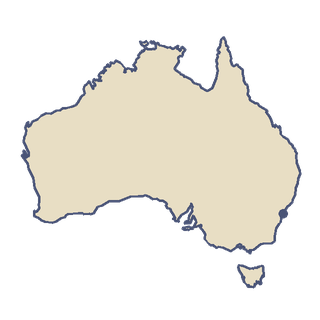

Australia
Australia is the only country that covers a whole continent. Most Australians live near the coast, while the dry outback fills the middle. Many of its animals are found nowhere else, from kangaroos and koalas to the lyrebird.
“I'd fly with the flying doctors over the outback.”
- In May 1928 the first flying doctor took off from Cloncurry, Queensland, bringing medical care by plane to the far outback.
- The Great Barrier Reef, the world's largest coral reef system, stretches more than 2,300 km along the Queensland coast.

The land
Australia is the sixth-largest country in the world, with about 7.7 million km² of land. It is also the flattest and driest inhabited continent. The country is a federation of six states and ten territories. Sydney and Melbourne, its two biggest cities, each have more than five million people. The two cities were rivals to be the capital, so in 1908 a new site in New South Wales was chosen as a compromise. That site became Canberra, and Parliament moved there on 9 May 1927.
Getting around
The Indian Pacific train crosses the whole country, 4,352 km from Sydney on the Pacific to Perth on the Indian Ocean. The trip takes about three days. On the Nullarbor Plain it runs along the world's longest straight stretch of railway, 478 km long. Qantas, the national airline, was founded in Winton, Queensland, on 16 November 1920, and is one of the oldest airlines still flying. It is now based in Mascot, next to Sydney Airport.
Food
Indigenous Australians have lived off the plants and animals of the bush for more than 60,000 years. The macadamia, a native nut, is now widely farmed. Barbecued meat and the meat pie are national favourites. Vegemite, a dark spread made from leftover brewers' yeast, was created in Melbourne in 1922.
The Games
Sydney hosted the Summer Olympics from 15 September to 1 October 2000. About 10,600 athletes from 199 countries took part.
Fly over Australia.
-


Sydney
The sails on the harbour
The Cockatoo and the Lyrebird